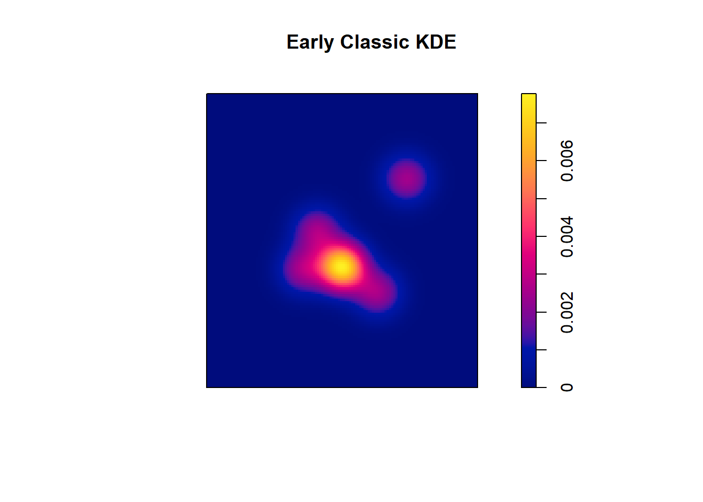

library(tidyverse)
library(dplyr)
library(raster)
library(ggplot2)
library(ggspatial)
library(viridis)
library(grid)
library(terra)
library(patchwork)
library(geoSweepR)
library(janitor)
library(stringr)
library(sf)
library(spatstat)
library(spatstat.geom)
library(spatstat.utils)Tikal Burial Timelapse
Introduction:
This creative visualization project creates a time-lapse visualization of burial patterns through time at Tikal, one of the ancient Maya’s most significant cities. Located in northern Guatemala’s dense jungle within Tikal National Park, the site encompasses both monumental architecture and extensive non-elite residential zones (Tikal National Park, n.d.). While Tikal is renowned for its pyramids, palaces, and plazas, this project focuses specifically on the often-overlooked non-elite residential areas that provide insights into the daily lives of the city’s general population (Jones & Satterhwaite, 1982; Tikal Reports, Numbers 1-11, 1986; Haviland & Becker, 2014; Shook, 1957).
This visualization draws from the University of Pennsylvania’s extensive archaeological investigations at Tikal, particularly Tikal Report 20A, which details non-elite residential areas and their associated burial practices. The primary data set combines the geo-referenced Carr Tikal Map from The Digital Archaeological Record with burial data from Tikal Report 20A (Tikal Reports, Numbers 1-11, 1986; Haviland & Becker, 2014). The visualization aims to reveal spatial and temporal patterns in Maya burial practices across Tikal’s Residential zones.
The Data:
Tikal Map
The map of Tikal was first published by Chritopher Carr in the Tikal Reports, Number 1-11 (1986). However, in 2013 he also published the geo-referenced version of the map in the open data source The Digital Archaeological Record (tDAR, 2013). The map was geo-referenced using the coordinate reference system WGS 84 / UTM Zone 16N (EPSG: 32616).
The mapping project divided Tikal into a grid system covering 16 km2. The grid consists of 500m x 500m squares, creating a coordinate system where vertical axes are labeled with letters (A-H) and horizontal axes are labeled with numbers (1-8). Each square within the grid is identified by its number-letter combination (ex. 1A for northwest corner and 8H for southeast corner).
Burial Data
The data from Tikal Report 20A contained information from 49 individuals excavated from different burials contexts in non-elite residential groups at Tikal, including three individuals (151A, 151B, 151C) sharing one grave. The individuals represent various different burial practices and time periods, from the Preclassic Period all the way to the Late Classic Period.
The data structure consists of two main components: spatial data representing burial locations and attribute data detailing burial characteristics. For the spatial data, a point feature class was previously created in ArcGIS Pro to georeference each burial location within the site. The point-feature class was created using information available in the report, including quadrant, group, and structure. The resulting geo-spatial information was added to the data table as separate columns. As such, the data table includes the following variables:
- Burial Number: Character variable. This is an identifier assigned to each individual by the University of Pennsylvania’s project.
- Latitude: Factor variable. Burial location point representing “X” using the coordinate reference system WGS 84 / UTM Zone 16N (EPSG: 32616).
- Longitude: Factor variable. Burial location point representing “Y” using the coordinate reference system WGS 84 / UTM Zone 16N (EPSG: 32616).
- Quadrangle: Character variable. This is the broadest representation of burial. The quadrants each represent four squares in the grid system.
- Camp: F4, F5, G4, G5
- Encanto: F2, F3, G2, G3
- Corriental: D6, D7, E6, E7
- Perdido: B6, B7, C6, C7
- Great Plaza: D4, D5, E4, E5
- Peripheral Squares: columns A and H, and rows 1 and 8.
- Temple IV: B4, B5, C4, C5
- Inscriptions: F6, F7, G6, G7
- NA: No information available
- Structure: Character variable. Identifies the location of a burial to a specific structure within a group. This is the most specific information on burial location in the data. Structures are identified numerically within each square in the grid system. For example, Structure 6F-47 is the 47th structure identified in the square 6F.
- Group: Character variable. Identifies the location of a burial to a specific group. Groups are identified numerically within each square in the grid system. For example, Group 6F-7 is the 7th group identified in the square 6F.
- Age: Character variable. Identifies individuals as either adult or child. Also shows when no data is available.
- Sex: Character variable. Identifies individuals as either female or male. Also shows when no data is available. It is important to note that the original data differentiated between “probable” female/male and female/male. However, for the purpose of this project, they were combined.
- Time Period: Individuals were dated to four distinct periods based on ceramics. The four periods are Preclassic, Early Classic, Intermediate Classic, and Late Classic.
- Grave Type: Character variable. Identified the general archaeological context of the burial. There are six unique grave types, including formal grave with a roof, formal grave with walls and a roof, formal grave with walls only, informal graves, and chultuns (and similar graves to chultuns).
- Location: Character variable. Identifies the position of the burial in relation to the structure. This includes categories to determine whether the burial was placed in alignment to the structure axis or not.
- Head Orientation: Character variable. Identifies the cardinal direction of the position of the head.
- Body Position: Character variable. This variable was coded using the descriptions in Tikal Report 19. Codes are composed of a letter and a number to represent different body positions. The full list of explanations is available in the supplementary information in the main directory.
- Associated Material: Character variable. This variable was coded using the descriptions in Tikal Report 19. Codes are composed of a letter and a number to represent different body positions. The full list of explanations is available in the supplementary information in the main directory.
Methods:
For this visualization, I will be going through a series of analysis to create various kernel density estimations before putting them all together as a time-lapse video. However, before beginning, I will clean the data to remove columns with no data, and re-naming columns and data values to remove spaces and spatial characters. Then I will filter the data to create four different data frames representing each time period.
In this instance, the entire data set only contains information about 50 individuals which is a very small sample, especially when it is compared to the map of Tikal, which spans 16 km^2. The sample data will get even smaller when filtered to contain only data from each specific time period. To work around this issue, the a larger data set will be simulated using a jitter. In addition, to make sure the maps are smooth and easier to interpret in the time lapse, rather than creating a heatmap, I will be creating Kernel Density Estimations (KDE). There will be four distinct KDEs representing burials in each time period. Those KDEs will be combined into a sequence with the Carr Tikal map as a basemap.
Before we start:
Packages:
Loading the Data:
- The Geo Referenced Map:
Tikal <- rast("Data/MapTikal.tif")
print(Tikal) # Always check the coordinate system. Everything should match.class : SpatRaster
dimensions : 9413, 8452, 1 (nrow, ncol, nlyr)
resolution : 0.5965274, 0.5813768 (x, y)
extent : 218638.4, 223680.3, 1903217, 1908690 (xmin, xmax, ymin, ymax)
coord. ref. : WGS 84 / UTM zone 16N (EPSG:32616)
source : MapTikal.tif
name : MapTikal Tika_plot <- plot(Tikal,
col = gray.colors(100, start = 0, end = 1),
main = "Georeferenced Map of Tikal")- The Burial Data:
f <- "Data/BurialData_TR20.csv"
burials <- read_csv(f, col_names = TRUE)Rows: 53 Columns: 15
── Column specification ────────────────────────────────────────────────────────
Delimiter: ","
chr (13): Burial, Quadrangle, Structure, Group, Age, Sex, Time Period, Grave...
dbl (2): latitude, longitude
ℹ Use `spec()` to retrieve the full column specification for this data.
ℹ Specify the column types or set `show_col_types = FALSE` to quiet this message.head(burials)# A tibble: 6 × 15
Burial latitude longitude Quadrangle Structure Group Age Sex `Time Period`
<chr> <dbl> <dbl> <chr> <chr> <chr> <chr> <chr> <chr>
1 45 222133. 1906431. Camp Str. 4F-… 4F-6 Adult Male Late Classic…
2 49 222511. 1907072. Encanto Str. 2G-… 2G-1 Adult Male Late Classic…
3 50 222510. 1907071. Encanto Str. 2G-… 2G-1 Adult Male Late Classic…
4 52 222510. 1907070. Encanto Str. 2G-… 2G-1 Adult Male Late Classic…
5 53 222510. 1907069. Encanto Str. 2G-… 2G-1 Adult Unkn… Late Classic…
6 54 222510. 1907068. Encanto Str. 2G-… 2G-1 Adult Unkn… Intermediate…
# ℹ 6 more variables: `Grave Type` <chr>, Location <chr>,
# `Head Orientation` <chr>, `Body Position` <chr>,
# `Associated Material 1` <chr>, `Associated Material 2` <chr>Data Wrangling:
As with any project involving data, the first step is to clean the burial data. For this step, I will use a variety of packages and methods to edit the data table as a whole and to fix specific issues within certain columns. In terms of the entire data set, data wrangling involves cleaning the names of the columns to avoid special characters and spaces using the package {janitor}, cleaning the data in each row using the packages {dplyir} and {stringr}, and changing values that say “no information,” “Unkown,” or “Other” to NA values that R can recognize. Lastly, I will delete empty rows with no data.
In terms of data wrangling specific columns, I will rename the data in “time_period” to shorter abbreviations of each time period. In the column “grave_type” I will also combine “chultun” and “chultun-like” into one category. The last thing I will do is remove the column “associated_materials_2” as only one row has data in that column.
# Remove column with no data
burials$`Associated Material 2` <- NULL
burials <- burials %>%
# Removing empty rows
filter(
!if_all(
everything(),
~ is.na(.) | . == ""
)
) %>%
# Cleaning column names
clean_names() %>%
# Removing special characters and spaces from row data
mutate(
across(
where(is.character),
~.x %>%
str_replace_all(" ", "") %>%
str_replace_all("[^A-Za-z0-9._-]", "")
)
) %>%
# Changing data with no information to `NA`
mutate(
across(where(is.character), ~na_if(., "NoInformation")),
across(where(is.character), ~na_if(., "Other")),
across(where(is.character), ~na_if(., "Others"))
) %>%
# Changing the name of time period categories
mutate(time_period = case_when(
str_detect(tolower(time_period), "lateclassicimix-related") ~ "LC",
str_detect(tolower(time_period), "intermediateclassicik-related") ~ "IC",
str_detect(tolower(time_period), "preclassic") ~ "PC",
str_detect(tolower(time_period), "earlyclassicmanik-related") ~ "EC",
TRUE ~ time_period
)) %>%
# Combinging chultun and chultun-like grave types
mutate(grave_type = case_when(
str_detect(tolower(grave_type), "chultun") ~ "chultun",
TRUE ~ `grave_type`
)
) %>%
# Fix flipped coordinates
mutate(
x = latitude,
y = longitude
) %>%
dplyr::select(-latitude, -longitude)Filtering by Time Period
In this step, I will use filter() to create four different data frames. Each data frame will be named according to the time period it represents.
- Preclassic Burials
pc_burials <- burials %>%
filter(
time_period == "PC"
)
head(pc_burials)# A tibble: 3 × 14
burial quadrangle structure group age sex time_period grave_type location
<chr> <chr> <chr> <chr> <chr> <chr> <chr> <chr> <chr>
1 62 Encanto Str.2G-2 <NA> Adult Male PC chultun Structu…
2 128 Corriental Str.6E-Su… 6E-1 Adult Fema… PC Formal-wa… Structu…
3 158 Camp Plat.5F-1 5F-1 Adult Male PC Formal-wa… <NA>
# ℹ 5 more variables: head_orientation <chr>, body_position <chr>,
# associated_material_1 <chr>, x <dbl>, y <dbl>- Early Classic Burials
ec_burials <- burials %>%
filter(
time_period == "EC"
)
head(ec_burials)# A tibble: 6 × 14
burial quadrangle structure group age sex time_period grave_type location
<chr> <chr> <chr> <chr> <chr> <chr> <chr> <chr> <chr>
1 64 Encanto Str.2G-61 <NA> Adult Unkn… EC Informal Structu…
2 138 Corriental Plat.6E-1 6E-1 Child Unkn… EC Formal-ro… <NA>
3 146 Perdido Str.6C-45 6C-1 Adult Male EC Informal Structu…
4 152 Corriental Str.6E-26 6E-1 Adult Fema… EC <NA> <NA>
5 153 Corriental Str.6E-Su… 6E-1 Adult Male EC Formal-ro… Structu…
6 169 GreatPlaza Str.5D-7 5D-1 Adult Male EC chultun Structu…
# ℹ 5 more variables: head_orientation <chr>, body_position <chr>,
# associated_material_1 <chr>, x <dbl>, y <dbl>- Intermediate Classic Burials
ic_burials <- burials %>%
filter(
time_period == "IC"
)
head(ic_burials)# A tibble: 6 × 14
burial quadrangle structure group age sex time_period grave_type location
<chr> <chr> <chr> <chr> <chr> <chr> <chr> <chr> <chr>
1 54 Encanto Str.2G-59 2G-1 Adult Unkno… IC Formal-wa… Structu…
2 57 Encanto Str.2G-59 2G-1 Adult Male IC Informal Structu…
3 58 Encanto Str.2G-59 2G-1 Adult Unkno… IC Informal Structu…
4 63 Encanto Str.2G-10 2G-2 Adult Female IC chultun Structu…
5 65 Encanto Str.3F-24 3F-1 Adult Unkno… IC Formal-wa… Structu…
6 119 Corriental Plaza 7E-6 Adult Male IC Informal <NA>
# ℹ 5 more variables: head_orientation <chr>, body_position <chr>,
# associated_material_1 <chr>, x <dbl>, y <dbl>- Late Classic Burials
lc_burials <- burials %>%
filter(
time_period == "LC"
)
head(lc_burials)# A tibble: 6 × 14
burial quadrangle structure group age sex time_period grave_type location
<chr> <chr> <chr> <chr> <chr> <chr> <chr> <chr> <chr>
1 45 Camp Str.4F-26 4F-6 Adult Male LC Formal-ro… <NA>
2 49 Encanto Str.2G-59 2G-1 Adult Male LC Formal-ro… Structu…
3 50 Encanto Str.2G-59 2G-1 Adult Male LC Informal Structu…
4 52 Encanto Str.2G-59 2G-1 Adult Male LC Informal Structu…
5 53 Encanto Str.2G-59 2G-1 Adult Unkno… LC Informal Structu…
6 55 Encanto Str.2G-59 2G-1 Child Unkno… LC Formal-wa… Structu…
# ℹ 5 more variables: head_orientation <chr>, body_position <chr>,
# associated_material_1 <chr>, x <dbl>, y <dbl>Re-sampling the data
As stated earlier, the size of this data set is quite small with less than 50 burials in total. Once it was separated into the different periods, this number shrank even more. Now, the four data sets range from 3 to 27 individuals. Considering that 3 individuals are not enough for a kernel density estimation (KDE) that spreads across 16 km^2, I will have to resample the data before creating the KDE. While the resample_heatmap() function from the geoSweepR{} package can resample and create the heatmap at once, the disparity in the data size and the area of the map causes the function to fail. To avoid this, I will manually simulate a more realistic point cloud around the available data before applying a kernel density estimation (KDE) to create the visualization.
The first step to create the KDE is to simulate a denser, but still realistic, point cloud around the available data. To make this easier to reproduce across the different time periods, I will do this by creating a function called simulate_cloud(). For this function I will need the data from the burials to be stored as sf objects. So once the function is written I will use the sf{} package to convert each period’s data into an sf object before running the new sf object through the function.
The function created for this part simulates new burial locations based on each period’s data set, applying a random jitter to each point within a specified radius. It uses the original locations as base and generate multiple points per burial. Each new point keeps the same attributes from the original data. The number of points that are generated depends on the number of rows that are available in the original data to ensure that the simulated data set contains around 2,000 points.
To achieve the simulated data sets, this function first extracts the coordinates and burial information from each original point, then randomizes an angle and a distance to calculate new points. The same burial information is repeated in all the simulations for each point and combined into one data frame, which is then turned into a sf object.
simulate_cloud <- function(data){
radius <- 30
n_points <- floor(10000 / nrow(data))
coords <- st_coordinates(data)
sim_pt_list <- lapply(1:nrow(data), function(i) {
# Original coordinates of each point
x <- coords[i, 1]
y <- coords[i, 2]
# Original attributes associated to each point, except geometry
burial_data <- st_drop_geometry(data[i, drop = FALSE])
# Randomize angle and distance to simulate the new points
angles <- runif(n_points, 0, 2 * pi)
distances <- runif(n_points, 0, 2 * radius)
# Calculate the new simulated coordinates
x_new <- x + distances * cos(angles)
y_new <- y + distances * sin(angles)
# Repeat burial data for each new point without shuffling
sim_data <- cbind(burial_data[rep(1, n_points), ], x = x_new, y = y_new)
return(sim_data)
})
# Combine all simulated points into one data frame
sim_pts <- do.call(rbind, sim_pt_list)
# Convert data frame into an sf object with the correct CRS
sim_sf <- st_as_sf(sim_pts, coords = c("x", "y"), crs = st_crs(data))
return(sim_sf)
}- Preclassic Burials
# Converting to sf object
pc_sf <- st_as_sf(
pc_burials,
coords = c("x", "y"),
crs = 32616)
# Simulating new points
pc_simulated <- simulate_cloud(pc_sf)- Early Classic Burials
# Converting to sf object
ec_sf <- st_as_sf(
ec_burials,
coords = c("x", "y"),
crs = 32616)
# Simulating new points
ec_simulated <- simulate_cloud(ec_sf)- Intermediate Classic Burials
# Converting to sf object
ic_sf <- st_as_sf(
ic_burials,
coords = c("x", "y"),
crs = 32616)
# Simulating new points
ic_simulated <- simulate_cloud(ic_sf)- Late Classic Burials
# Converting to sf object
lc_sf <- st_as_sf(
lc_burials,
coords = c("x", "y"),
crs = 32616)
# Simulating new points
lc_simulated <- simulate_cloud(lc_sf)Once that is done, now each data set has around 2,000 points, which is enough to create a kernel density estimation. You can see the summary of the new simulated data sets here:
summary(pc_simulated) burial quadrangle structure group
Length:9999 Length:9999 Length:9999 Length:9999
Class :character Class :character Class :character Class :character
Mode :character Mode :character Mode :character Mode :character
age sex time_period grave_type
Length:9999 Length:9999 Length:9999 Length:9999
Class :character Class :character Class :character Class :character
Mode :character Mode :character Mode :character Mode :character
location head_orientation body_position associated_material_1
Length:9999 Length:9999 Length:9999 Length:9999
Class :character Class :character Class :character Class :character
Mode :character Mode :character Mode :character Mode :character
geometry
POINT :9999
epsg:32616 : 0
+proj=utm ...: 0 summary(ec_simulated) burial quadrangle structure group
Length:9996 Length:9996 Length:9996 Length:9996
Class :character Class :character Class :character Class :character
Mode :character Mode :character Mode :character Mode :character
age sex time_period grave_type
Length:9996 Length:9996 Length:9996 Length:9996
Class :character Class :character Class :character Class :character
Mode :character Mode :character Mode :character Mode :character
location head_orientation body_position associated_material_1
Length:9996 Length:9996 Length:9996 Length:9996
Class :character Class :character Class :character Class :character
Mode :character Mode :character Mode :character Mode :character
geometry
POINT :9996
epsg:32616 : 0
+proj=utm ...: 0 summary(ic_simulated) burial quadrangle structure group
Length:10000 Length:10000 Length:10000 Length:10000
Class :character Class :character Class :character Class :character
Mode :character Mode :character Mode :character Mode :character
age sex time_period grave_type
Length:10000 Length:10000 Length:10000 Length:10000
Class :character Class :character Class :character Class :character
Mode :character Mode :character Mode :character Mode :character
location head_orientation body_position associated_material_1
Length:10000 Length:10000 Length:10000 Length:10000
Class :character Class :character Class :character Class :character
Mode :character Mode :character Mode :character Mode :character
geometry
POINT :10000
epsg:32616 : 0
+proj=utm ...: 0 summary(lc_simulated) burial quadrangle structure group
Length:9990 Length:9990 Length:9990 Length:9990
Class :character Class :character Class :character Class :character
Mode :character Mode :character Mode :character Mode :character
age sex time_period grave_type
Length:9990 Length:9990 Length:9990 Length:9990
Class :character Class :character Class :character Class :character
Mode :character Mode :character Mode :character Mode :character
location head_orientation body_position associated_material_1
Length:9990 Length:9990 Length:9990 Length:9990
Class :character Class :character Class :character Class :character
Mode :character Mode :character Mode :character Mode :character
geometry
POINT :9990
epsg:32616 : 0
+proj=utm ...: 0 Kernel Density Estimation
The previous step resulted in four sf objects with around 2,000 data rows per object. To create the kernel density estimation for each of the four data frames, I created another function. This function uses the spatstat{} package and the terra{} package to convert the data from the simulated results and produce a KDE that can be plotted using base{}. The function is called kde() and has parameters for the data, the extent template, and sigma. The data will correspond to the simulated data from each time period, the extent template will be set to the Tikal map’s extent, and sigma varies to enhance visualization.
kde <- function(data, ext_template, sigma){
Tikalext <- ext(ext_template)
windowA <- owin(
xrange = c(Tikalext[1], Tikalext[2]),
yrange = c(Tikalext[3], Tikalext[4]))
coordsA <- st_coordinates(data)
ppp_data <- ppp(x = coordsA[,1], y = coordsA[,2], window = windowA)
kde_data <- density(ppp_data, sigma = sigma)
return(kde_data)
}- Preclassic KDE
pc_kde <- kde(pc_simulated, ext_template = Tikal, sigma = 300)
pc_kde_plot <- plot(pc_kde, main = "Preclassic KDE")- Early Classic KDE
ec_kde <- kde(ec_simulated, ext_template = Tikal, sigma = 300)
ec_kde_plot <- plot(ec_kde, main = "Early Classic KDE")
- Intermediate Classic KDE
ic_kde <- kde(ic_simulated, ext_template = Tikal, sigma = 300)
ic_kde_plot <- plot(ic_kde, main = "Intermediate Classic KDE")- Late Classic KDE
lc_kde <- kde(lc_simulated, ext_template = Tikal, sigma = 300)
lc_kde_plot <- plot(lc_kde, main = "Late Classic KDE")Adding the Basemap
Now that we have kernel density estimations for each time period, we need to combine those estimations to the Tikal basemap. To combine the two maps (the Tikal basemap and the KDE for each period) I first prepared the Tikal map to work in ggplot2{}. I used the packages terra{}, grid{}, and viridis{} to prepare and combine the maps. I also converted the KDE raster files for each time period into data frames using as.data.frame().
This was the code to prepare the Tikal map.
Tikal_matrix <- as.raster(Tikal[[1]])
Tikal_extent <- ext(Tikal)
Tikal_grob <- rasterGrob(
Tikal_matrix,
width = unit(1, "npc"),
height = unit(1, "npc"),
interpolate = TRUE)- Preclassic
pc_kde_df <- as.data.frame(pc_kde)
ggplot() +
annotation_custom(
Tikal_grob,
xmin = Tikal_extent[1], xmax = Tikal_extent[2],
ymin = Tikal_extent[3], ymax = Tikal_extent[4]
) +
geom_raster(
data = pc_kde_df,
aes(x = x, y = y, fill = value),
alpha = 0.6
) +
scale_fill_viridis_c(option = "D") +
coord_fixed() +
labs(title = "Preclassic Burial KDE") +
theme_minimal()- Early Classic
ec_kde_df <- as.data.frame(ec_kde)
ggplot() +
annotation_custom(
Tikal_grob,
xmin = Tikal_extent[1], xmax = Tikal_extent[2],
ymin = Tikal_extent[3], ymax = Tikal_extent[4]
) +
geom_raster(
data = ec_kde_df,
aes(x = x, y = y, fill = value),
alpha = 0.6
) +
scale_fill_viridis_c(option = "D") +
coord_fixed() +
labs(title = "Early Classic Burial KDE") +
theme_minimal()- Intermediate Classic
ic_kde_df <- as.data.frame(ic_kde)
ggplot() +
annotation_custom(
Tikal_grob,
xmin = Tikal_extent[1], xmax = Tikal_extent[2],
ymin = Tikal_extent[3], ymax = Tikal_extent[4]
) +
geom_raster(
data = ic_kde_df,
aes(x = x, y = y, fill = value),
alpha = 0.6
) +
scale_fill_viridis_c(option = "D") +
coord_fixed() +
labs(title = "Intermediate Classic Burial KDE") +
theme_minimal()- Late Classic
lc_kde_df <- as.data.frame(lc_kde)
ggplot() +
annotation_custom(
Tikal_grob,
xmin = Tikal_extent[1], xmax = Tikal_extent[2],
ymin = Tikal_extent[3], ymax = Tikal_extent[4]
) +
geom_raster(
data = lc_kde_df,
aes(x = x, y = y, fill = value),
alpha = 0.6
) +
scale_fill_viridis_c(option = "D") +
coord_fixed() +
labs(title = "Late Classic Burial KDE") +
theme_minimal()